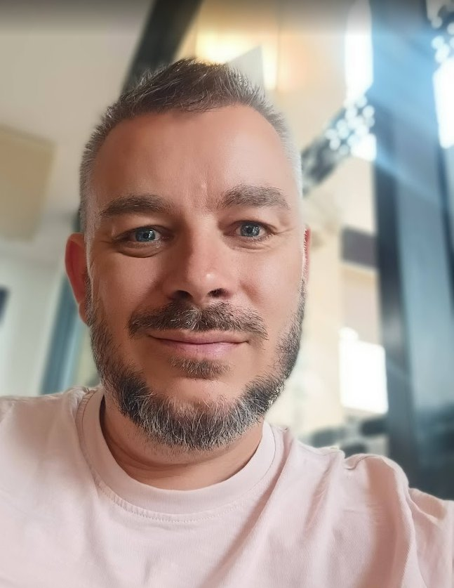

Une double casquette rare : je vis chaque jour ce que j'enseigne.

Je suis facilitateur et formateur en intelligence collective, mais aussi — et c'est ce qui fait toute la différence — fonctionnaire territorial au quotidien. Ce n'est pas un détail : c'est le cœur de ma pratique.
Chaque jour, j'accompagne des agents territoriaux dans leurs dynamiques de projet, de management et de cohésion. J'anime des ateliers, je facilite des groupes de travail, je soutiens des équipes en mouvement. Ce terrain nourrit en permanence ce que je transmets en formation.
Pas de discours théorique. Des outils que j'utilise moi-même. Des situations que je vis moi-même. Des apprentissages que je mets à jour en continu parce que je suis au cœur du réel.
Fonctionnaire territorial, j'accompagne chaque jour des équipes dans leurs dynamiques collectives, leurs projets et leur management.
Je conçois et anime des formations pour des collectivités, des structures publiques et associatives, en intra et via le CNFPT.
Cette double posture crée une boucle vertueuse : ce que je vis sur le terrain enrichit mes formations, et ce que j'expérimente en formation retourne dans ma pratique professionnelle. Les participants le ressentent — et c'est souvent ce qu'ils retiennent.
Les meilleures solutions émergent du groupe, pas d'un seul expert.
Rien de théorique. Tout ce que j'enseigne, je le pratique.
L'expérimentation est le meilleur vecteur d'apprentissage durable.
Chaque personne a en elle les ressources pour transformer sa pratique.
Coopérer, ce n'est pas naturel — ça s'apprend, ça se cultive, ça se facilite.
Animation du projet managérial de la collectivité, accompagnement des dynamiques d'équipes, animation de groupes de travail.
Plus de 40 agents formés sur 4 jours chacun. Formation conçue et animée en intra.
Cycles de 2 jours, environ 12 participants par session, en intra et en inter.
3 jours d'animation auprès d'étudiants CAFERUIS et de futurs directeurs belges. Rencontre interculturelle, intelligence collective, coopération.
Interventions pour des communautés de communes et des départements sur l'intelligence collective et la co-construction.
Accompagnement sur les dynamiques collectives, les projets sociaux de territoire et la restructuration d'organisations.